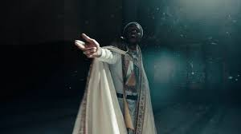
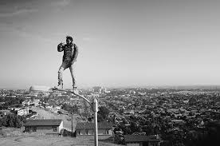
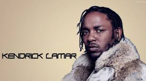
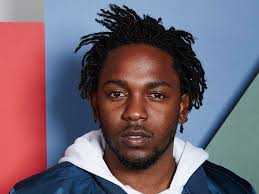
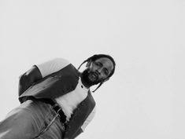
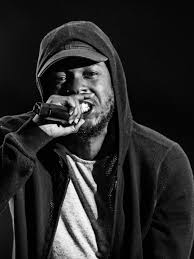
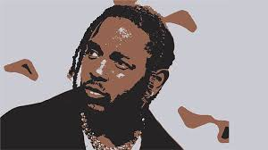
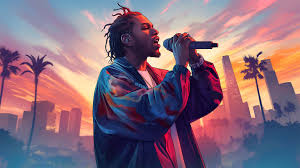
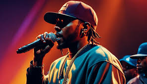
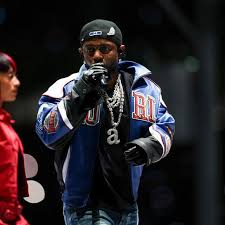

|  | Kendrick Lamar Duckworth nació el 17 de junio de 1987 en Compton, California, un área históricamente afectada por la violencia de pandillas y el crimen. Sus padres, Paula Oliver y Kenny Duckworth, se mudaron desde Chicago a Compton antes de su nacimiento, escapando de la vida de pandillas. Su padre estaba asociado con los Gangster Disciples, una pandilla de Chicago, pero intentó alejarse de ese entorno al mudarse a California. A pesar de crecer en un vecindario peligroso, Kendrick nunca se involucró directamente en pandillas. Sin embargo, estuvo rodeado de amigos y familiares que sí lo hicieron, lo que influyó en su música y perspectiva de la vida. Desde niño, era observador y callado, prefiriendo escribir y analizar su entorno en lugar de participar en actividades delictivas. Asistió a Centennial High School en Compton, donde fue un estudiante destacado con un excelente desempeño académico. Su amor por la escritura y la poesía eventualmente se transformó en letras de rap, inspirado por artistas como Tupac Shakur, The Notorious B.I.G., Jay-Z y Nas. |
|  | Kendrick Lamar es conocido por su relación con Whitney Alford, su novia de la secundaria y actual prometida. Llevan juntos más de una década y mantienen una relación sólida basada en la confianza y la privacidad. Compromiso: En 2015, Kendrick confirmó en una entrevista que estaba comprometido con Whitney. A pesar de la fama, han mantenido un perfil bajo y rara vez aparecen en eventos públicos juntos. Hijos: En julio de 2019, se reveló que la pareja había tenido su primer hijo, una niña. En mayo de 2022, a través de la portada de su álbum Mr. Morale & The Big Steppers, Kendrick mostró que había tenido un segundo hijo, cuyo nombre y detalles se desconocen. Whitney Alford: Es esteticista y cantante de fondo en algunos de los proyectos de Kendrick. Ha sido una gran influencia en su vida y su arte, y él ha hablado de ella en varias canciones, mostrándola como un pilar fundamental en su estabilidad emocional. |
|  | Kendrick Lamar es extremadamente reservado sobre su vida personal. A diferencia de muchos artistas de hip-hop, evita mostrar su vida en redes sociales y rara vez concede entrevistas sobre su vida fuera de la música. Estilo de vida sencillo: A pesar de su éxito y riqueza, Kendrick mantiene un perfil bajo y no es ostentoso. Vive una vida modesta comparada con otros raperos de su nivel, sin grandes exhibiciones de lujo. Círculo cercano: Mantiene un grupo íntimo de amigos y colaboradores, incluyendo a su equipo de Top Dawg Entertainment (TDE). Ausencia de redes sociales: Aunque tiene cuentas oficiales, apenas las usa. No comparte detalles sobre su vida diaria, lo que lo hace aún más misterioso para sus seguidores. Inspiración en la espiritualidad: Es un cristiano devoto y menciona su fe en muchas de sus canciones. Ha hablado de cómo la religión lo ha ayudado a mantenerse con los pies en la tierra. |
|  | Aunque la música es su principal enfoque, Kendrick también ha estado involucrado en otros proyectos: Filantropía: Ha donado dinero a programas educativos y organizaciones benéficas en Compton, apoyando a estudiantes y mejorando las condiciones de su comunidad natal. Cine y TV: Apareció en la serie Power y ha trabajado en proyectos cinematográficos, aunque no busca protagonismo en Hollywood. Influencias artísticas: Más allá del rap, se ha inspirado en literatura, cine y arte visual para sus conceptos musicales. Lamar ha ganado veintidós Premios Grammy. En 2014, recibió siete nominaciones a la 56.ª entrega de los Premios Grammy, incluyendo una nominación para el Álbum del Año, para good kid, m.A.A.d city. En 2015 durante la 57.ª entrega de los Premios Grammy, Lamar con su sencillo "i" ganó dos Premios Grammy, Premio Grammy a la Mejor Interpretación de Rap y Premio Grammy a la Mejor Canción de Rap. |
|  | Privacidad Extrema No expone su vida en redes sociales ni en entrevistas. No muestra lujos ni presume su dinero, a diferencia de otros raperos. Mantiene un círculo cercano y evita controversias. Espiritualidad y Religión Es cristiano y menciona su fe en sus letras. En DAMN. (2017), explora temas religiosos y la lucha entre el bien y el mal. En Mr. Morale & The Big Steppers (2022), aborda su crecimiento personal y el impacto de la religión en su vida. Lamar es un cristiano devoto, y dice que se convirtió después de la muerte de un amigo. Ha sido franco acerca de su fe, tanto en su música como en entrevistas. Anunció a una audiencia en el Staples Center durante el "Yeezus Tour" de Kanye West que se había bautizado en 2013. Lamar ha acreditado a Dios por su fama y su liberación del crimen que a menudo afectó a Compton en la década de 1990. |
|  | Filantropía y Activismo Ha donado dinero a escuelas en Compton y a organizaciones que apoyan a jóvenes en comunidades desfavorecidas. Se ha pronunciado sobre la injusticia racial y la brutalidad policial en EE.UU. Proyectos en Cine y Televisión Apareció en la serie Power (2018). Se rumorea que ha trabajado en guiones y proyectos cinematográficos. Al igual que Dr. Dre, asistió al Centennial High School en Compton. Lamar fue un buen estudiante, lo cual lo ayudó mucho en crear sus propias letras de rap. Ha mencionado muchas veces que su pasatiempo preferido es escribir, para ello comienza haciendo poemas, los que al final terminan por ser canciones de rap. También ha dicho en los medios que ha visto muchas veces familiares muriéndose en sus sueños durante años. |
|  | Durante las elecciones presidenciales de 2012, Lamar declaró: "Yo no voto. No hago ninguna votación, seré sincero contigo. No creo en ninguna de las cosas que están sucediendo en el mundo". Él continuó diciendo que votar fue inútil, y dijo: "Cuando digo que el presidente ni siquiera puede controlar el mundo, definitivamente sabes que hay algo más presionando los botones. Podrían hacer lo que quieran, todos somos títeres". arios días antes de las elecciones presidenciales de 2012, Lamar revirtió su afirmación anterior de que no iba a votar y dijo que votaba por Barack Obama porque Mitt Romney no tiene un "buen corazón". Lamar se reunió más tarde con el presidente Obama en enero de 2016 para promocionar el desafío de My Brother's Keeper de Obama. |
|  | La canción de Lamar "The Blacker the Berry", el segundo sencillo de To Pimp A Butterfly, fue lanzada el 9 de febrero de 2015. La canción generó controversia siguiendo las líneas: "Entonces, ¿por qué lloré cuando Trayvon Martin estaba en la calle, cuando pandillear me hace matar un negro más negro que yo? ¡Hipócrita!" qué personas percibieron como Lamar juzgando a la comunidad negra. Lamar luego habló sobre las letras en una entrevista de NPR, diciendo: "No soy yo quien apunta a mi comunidad; soy yo apuntándome a mí mismo, no hablo de estas cosas si no las he vivido, y he lastimado a gente en mi vida. Es algo en lo que aún tengo que pensar cuando duermo por la noche ".El 24 de septiembre de 2013, se lanzó el tercer álbum de Drake, Nothing Was the Same. Publicaciones como Complex especularon que Drake había enviado insultos subliminales a Lamar en la canción (y luego en el sencillo) "The Language". |
|  | Tras el lanzamiento del sencillo "HUMBLE." de Lamar, Kendrick se enfrentó a una reacción violenta por las líneas "Estoy tan jodidamente cansado de Photoshop / Muéstrame algo natural como afro de Richard Pryor / Muéstrame algo natural como un culo con algunas estrías", y fue acusado de sofocar secciones de mujeres que disfrutan del maquillaje en un intento de ser edificante. Su compañera de sello, SZA, defendió más tarde a Lamar. La modelo que apareció en el vídeo musical de "HUMBLE." también fue atacada en las redes sociales debido a su papel en el vídeo.En agosto de 2013, Lamar apareció en la canción "Control" de Big Sean, con Jay Electrónica y Lamar. En su verso, Lamar nombró a varios raperos diciéndoles que iba a "asesinar a su competencia". El verso reunió respuestas y diss tracks de artistas como Joe Budden, Papoose, Meek Mill, Diddy, Lupe Fiasco y B.o.B. Rolling Stone llamó al verso "Uno de los momentos de rap más importantes de la década" |
|  | Se ha informado que Kendrick Lamar está en una pelea con Drake. Complex llamó a su relación "complicada", Genius lo llamó una "guerra subliminal" y GQ lo llamó una "guerra fría" debido a la popularidad masiva de ambos artistas. La tensión reportada entre los artistas comenzó después de que el sencillo "Control" de Big Sean con Kendrick Lamar y Jay Electrónica fuera lanzado en agosto de 2013. En su verso, Lamar afirmó que iba a "asesinar" líricamente a todos sus competidores, incluido Drake. Antes del verso, Lamar había aparecido en "Buried Alive Interlude" de Drake, y Drake apareció en el sencillo "Poetic Justice" de Lamar, y ambos aparecieron en la canción de A$AP Rocky, "Fuckin 'Problems". Drake respondió el verso de "Control" de Lamar en una entrevista con Billboard, diciendo: "Sé muy bien que Kendrick no me está asesinando, en absoluto, en ninguna plataforma". |